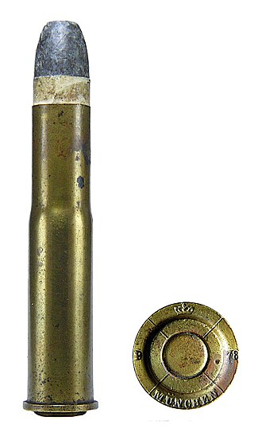

The 11mm Mauser (also known as the 11×60mmR Mauser or .43 Mauser) is a black-powder cartridge developed between 1867-1871 and used in the Mauser Model 1871 rifle, as well as the 71/84 variant.[1][2] It was popular in German sporting rifles up until the early 20th century. It is no longer in production, however it is available from custom loaders and handloading can be done. As early as 1867, the first considerations arose in Prussia to replace the needle rifle with a breech-loading weapon with centerfire cartridges.
